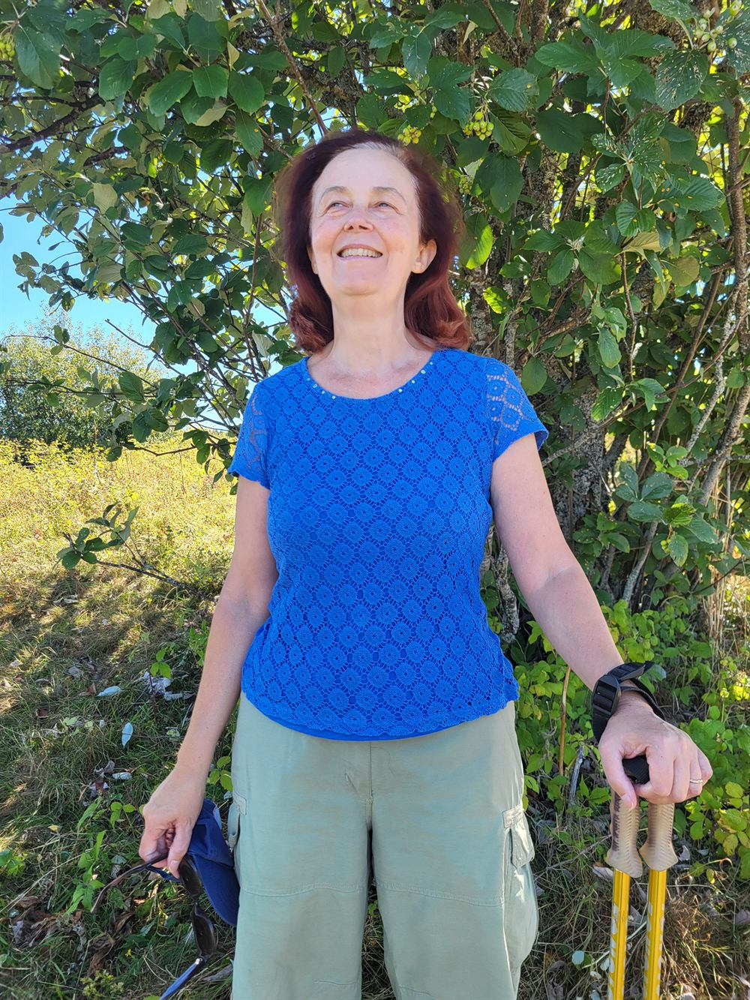

Les stages collectifs
Trois jours en petit groupe, entre marche dans les Bauges et ateliers.

Accueil · Séances individuelles
Avancer sur une question précise, à votre rythme.
En dehors des stages et du Refuge, je vous reçois pour des séances ponctuelles ou régulières : pour clarifier une situation, traverser une période difficile, vous accorder un temps de recentrage ou prendre du recul sur votre pratique professionnelle.
Chaque séance s’appuie sur la même approche que mes séjours : faire dialoguer la tête, le cœur, le corps et l’esprit, avec une présence douce, confrontante et rassurante.
Choisissez celle qui correspond à votre demande. En cas de doute, écrivez-moi simplement ce qui vous amène : nous verrons ensemble ce qui vous conviendra le mieux.
Clarifier une situation, retrouver une direction, passer à l’action.
Une transition professionnelle, une décision à prendre, un projet qui patine, une relation qui pèse : nous explorons ce qui se joue, vos ressources et les options qui s’offrent à vous, jusqu’aux premiers pas concrets.
Pour qui : Particuliers, managers, dirigeants, indépendants.
Outils : Coaching, PNL, analyse transactionnelle, approche systémique.
Durée et tarif : à préciser
Déposer ce qui pèse et apaiser ce qui résiste.
Quand comprendre ne suffit plus : émotions envahissantes, conflits intérieurs, événements difficiles. Nous travaillons avec la parole, le corps, les images et des approches comme l’EFT ou la logosynthèse, à votre rythme.
Pour qui : Toute personne traversant une période difficile ou un blocage récurrent.
Outils : EFT, logosynthèse, approches corporelles et symboliques, constellations.
Durée et tarif : à préciser
Un temps de détente profonde et de recentrage.
Un soin Reiki ou une séance d’harmonisation énergétique, allongé et habillé, pour ralentir, relâcher les tensions et vous accorder un vrai temps de présence à vous-même.
Pour qui : Stress, fatigue, besoin de calme ou de recentrage.
Outils : Reiki, harmonisation et rééquilibrage énergétique.
Durée et tarif : à préciser
Prendre du recul sur sa pratique d’accompagnement.
Pour les coachs, thérapeutes, formateurs et professionnels de l’accompagnement : analyser une situation, comprendre ce qui se rejoue dans la relation, prendre soin de vous et faire grandir votre posture.
Pour qui : Coachs, thérapeutes, formateurs, praticiens, managers accompagnants.
Outils : Analyse de pratique, approche systémique, analyse transactionnelle.
Durée et tarif : à préciser

Nous prenons le temps de faire connaissance et de comprendre ce qui vous amène. Je vous explique comment je travaille, et nous convenons ensemble de la suite : une seule séance, quelques rendez-vous, ou un séjour au Refuge des Possibles si cela vous semble plus juste.
Vous n’avez rien à préparer. Vous venez avec vos questions, et nous les explorons à votre rythme.
Ces séances relèvent du développement personnel et du bien-être. Elles ne remplacent pas un suivi médical ou psychiatrique lorsque celui-ci est nécessaire.
Trois jours en petit groupe, entre marche dans les Bauges et ateliers.

Un à trois jours d’accompagnement individuel, rien que pour vous.